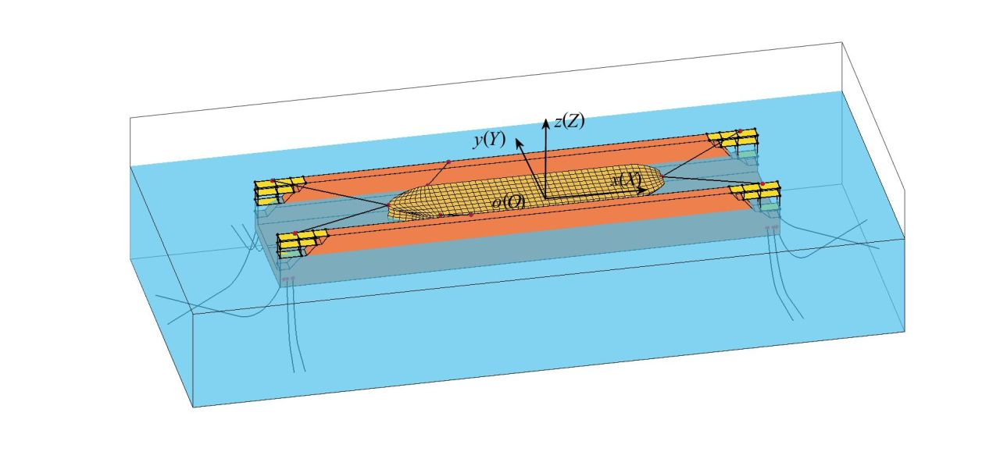

← Back to Publications Numerical study on the automatic ballast control of a floating dock Xueliang Wen, Jianan Zhang, Alejandro Garcia Conde, Muk Chen Ong2024  AbstractRead the original abstract on the publisher’s website ↗Read the published article ↗ Publication typeJournal articleJournalJournal of Offshore Mechanics and Arctic EngineeringVolume146Issue4Article number041401DOI10.1115/1.4064014